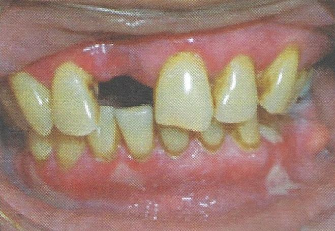

Mucous membrane pemphigoid
มีการสร้าง antibody ต่อ basement membrane
พบตุ่มพองที่แตกออกอย่างรวดเร็วหรือหลุดลอกของเยื่อบุเป็นลักษณะแผ่นเยื่อสีขาว
พบบริเวณเหงือกร้อยละ 94 กระพุ้งแก้ม และริมฝีปากด้านใน
การวินิจฉัย biopsy
การรักษา ใช้ยากลุ่ม steroid และ immunosuppressant